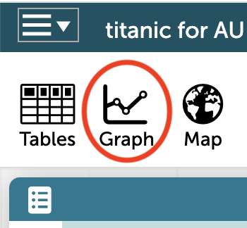
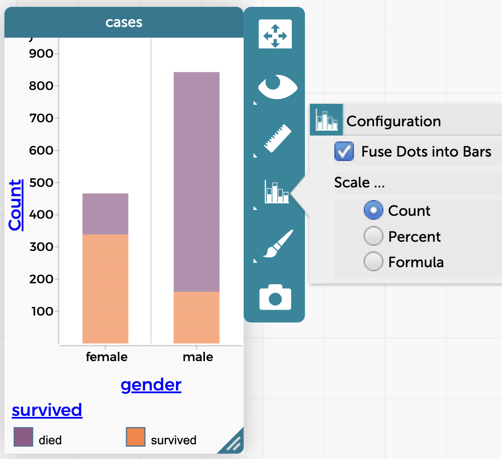

CODAP for Australians
Version 9.0 of the Australian Curriculum is an exciting document. The Mathematics and Digital Technology sections open doors for Australian teachers, suggesting new directions and possiblities.
The new-ish bits are often related to technology and/or data. Computers – or computational thinking – are taking a more prominent role in society and, correspondingly, in mathematics education. And the prominence of data in today’s world leads us to continue to emphasize statistics and probability as important parts of every student’s maths upbringing.
Making that work in the classroom requires flexible (and inexpensive) tools.
This booklet introduces the Common Online Data Analysis Platform (CODAP), an open-source, web-based tool designed for schools. And it’s free. You (or your students) don’t even need to sign up to use it.
CODAP has many, many capabilities. This document will only get you started. We will look at five different possible uses of CODAP, matching some of the topics in Version Nine. We will not pretend that these are classroom-ready lessons, but they might whet your appetite for more, and encourage you to find – and create! – lessons you can use as you move forward.
But first, the basic basics.
We have created a live example below. In it, you can use CODAP right on this page.
Scroll down and look. The document has a table in it with data about the 1309 passengers aboard the HMS Titanic. Suppose we wanted to investigate whether males or females were more likely to have survived.
Let’s make a graph and see.

- Click the
Graphtool on the toolbar.
A graph appears. The points are randomly distributed. We’ll organize them by doing what we always tell students: “label your axes.” In this case, the “label” is the column heading.
- Drag the column heading
genderto the horizontal axis of the graph.
The points organize themselves into two columns, one for males, one for females. Let’s see who lived through the disaster…
- Drag
survivedover the graph and “plop” it in the middle.
The points color by who survived.
It should be clear that, in general, females had a better chance of surviving.
Questions should emerge of the form, “how do I…?” or “Can I…?”, for example,

- Can I see counts and percentages?1
- How do I make bar graphs out of those dots?2
- How do I put my own data into CODAP?3
These and other questions are for another time and place. For now, CODAP has online help (there is a button in the upper right), and that’s a good place to start.
I hope that your imagination is already leaping ahead, thinking about what else this short experience makes possible, noting that it’s now easy for students to make graphs with over 1300 points and see patterns in the data.
More importantly, think about what other questions students can address as they explore, and what other ways you might connect mathematics through data. The side headings on the left lead you to some brief ideas.